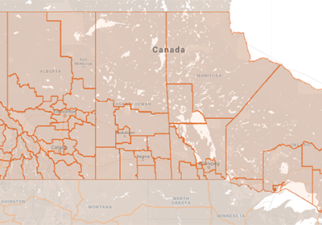

Spectrum management and telecommunications
Provides access to the radiofrequency spectrum by issuing authorities for its use, minimizing interference, securing Canada's access to it through international negotiations and by ensuring its safe and efficient use
Licences and certificates
- Introduction to the radio frequency spectrum
- What is the radio frequency spectrum? How is it used today? Learn about spectrum management and ISED’s role in managing spectrum
- Radio authorizations
- Explore the different authorizations, such as licences and certificates, required to use radio frequency spectrum
- Spectrum Management System (SMS)
- The SMS provides online access to a wide range of services including applying for and managing radio authorizations, paying invoices and using various search tools for authorization data
- Conditions of licence
- View the conditions that apply to your radio authorization (e.g. spectrum, radio or satellite licence or broadcasting certificate)
Devices and equipment
- Equipment certification
- Learn the processes that apply to testing and certifying radio or terminal products for the Canadian market
- Regulatory standards
- Consult the rules and standards that apply to devices and equipment
- Open technical consultations
- Learn about and participate in current consultations on technical standards (e.g. RSS, SRSP, ICES, BETS) posted on the Radio Advisory Board of Canada website (link leads to an external site)
- Mutual Recognition Agreements and Arrangements (MRAs)
- Learn how to become a recognized lab for testing and/or certifying equipment for Canada and other countries with which we have a mutual agreement
Safety and compliance
- Compliance and enforcement
- Learn about penalties
- Interference
- Learn about interference
- Radiofrequency energy and safety
- Learn about RF and how Canada keeps you safe
- Facts about towers
- Learn about the rules on building towers and their safety
- District offices
- Contact your nearest office to report interference or an antenna siting
Spectrum allocation
- Radio spectrum services
- Access information on Canada's spectrum services and designated uses, including rules and policies, frequency bands and licensing requirements
- Canadian Table of Frequency Allocations
- Consult the spectrum assignments and frequency allocations available for radio services in Canada
- Spectrum Allocation Tool
- Search for spectrum allocations and regulations by radio service and frequency range
Learn more
- Committees and stakeholders
- Learn about telecom committees and organizations, such as Emergency Telecommunications, the CNO-ITU and CSTAC
- Key documents
- Access the legislation that regulates spectrum and telecommunications as well as key documents, such as the Spectrum Outlook and the Spectrum Policy Framework for Canada
Communications research
- Communications Research Centre Canada (CRC)
- Learn about the CRC’s work on wireless telecommunications, focused on what is possible and what works
- CRC videos
- Watch the CRC’s videos to learn about spectrum, 5G and wireless technology
Features

Service areas used for all competitive licensing processes

Access to custom area licences for 5G wireless services

Priority access to spectrum licences for Indigenous applicants